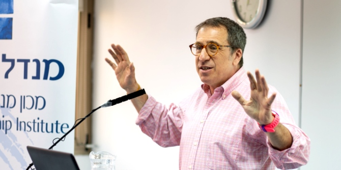

"ההיסטוריה היהודית רצופה התמודדויות עם משברים מעוררי ייאוש בדרכים יצירתיות. כך מאז ימי נח והמבול ועד המאה העשרים. אל מול משבר האקלים, אנו בתוכנית מנדל למנהיגות בתרבות יהודית מבקשים לשאול: כיצד אפשר להשתמש בתרבות היהודית כמשאב להתמודד עם אתגרים ומשברים הרובצים לפתחנו?" אמר מישאל ציון, מנהל תוכנית מנדל למנהיגות בתרבות יהודית, בדברי ההקדמה שלו ההרצאה. "נייג׳ל הוא אחד האנשים שיודעים לשאול שאלות גדולות ולתת את האמונה שאפשר להשיב עליהן תשובות רעננות, לא משנה מה גודל האתגר. ביקשנו ממנו לסכם עשרים שנות עשייה אל מול משבר האקלים בקהילה היהודית, ולשתף בתובנות ממעשה מנהיגות זה".
בהרצאה הגדיר נייג'ל סאבאג', אחת הדמויות המשמעותיות ביותר בשיח על משבר האקלים בקהילה היהודית העולמית, את מטרתו של ארגון חזון: "חזון שם לו למטרה לשפר את איכות הסביבה בעולם בכלל דרך שינוי השיח בקהילה היהודית". בהרצאתו, שנערכה ב-26 במאי במכון מנדל למנהיגות, פירט סאבאג׳ את האתגרים הייחודיים בהנעת שינוי בשיח ובעשייה אל מול משבר האקלים: "קשה לנו להתמודד עם ההתחממות הגלובלית משום שכבני אדם אנו זקוקים לבהירות בהגדרת כישלון והצלחה, ומשום שאנו מבקשים להיות הצד הטוב נגד מישהו אחר; ואולם, במקרה הזה אין צד רע וצד טוב. כולנו גדלנו באופן שאינו בר-קיימא".

״אני מבקש להתמקד במעשה מנהיגות שכל אחד מאיתנו יכול לעשות, מעבר לשאלת הצריכה וההרגלים האישיים. לא רק במעשים שכל מדינה יכולה לעשות, אלא במינוף הכוח שיש לנו על ארגוני הביניים". סאבאג׳ הדגיש כי "שינוי משמעותי יכול להגיע באמצעות השפעת הפרט על הארגונים והקהילות שהוא שייך להם. שינוי של ארגונים וקהילות אפשרי משום שהם קטנים יחסית לממשלה, והם בעלי כוח השפעה משמעותי דיו להקרין על הממשלה. הקמה של 'צוותי קיימות' (green teams) בארגונים הוא קריטי לשינוי משמעותי".
סאבאג׳ הדגיש גם את הרגלי התזונה שלנו כמנוף לשינוי. ״לאורך מרבית ההיסטוריה האנושית אכלו בני האדם בשר וחלב, אך לעולם לא בצורה יומיומית ומתועשת כמו היום. השיטה היעילה, הנוחה והמשמעותית ביותר להקל את עומס האקלים היא הפחתת הצריכה של מוצרים אלו, לא רק ברמה המשפחתית אלא גם ברמה הקהילתית והארגונית", אמר. "לקהילה היהודית מוסדות מרכזיים שליוו אותה לכל אורך שנות קיומה. עתה, ביכולתנו להשפיע על צורת הצריכה של המוסדות היהודיים הללו, על העם היהודי, ודרכו על אומות העולם".
בסיום הרצאתו ציטט סאבאג׳ את דברי הרב יונתן זקס, לשעבר הרב הראשי של בריטניה: "אופטימיזם הוא האמונה שהעולם משתנה לטובה, תקווה היא האמונה שאנו יכולים לשנות אותו לטובה".
{kind=link}